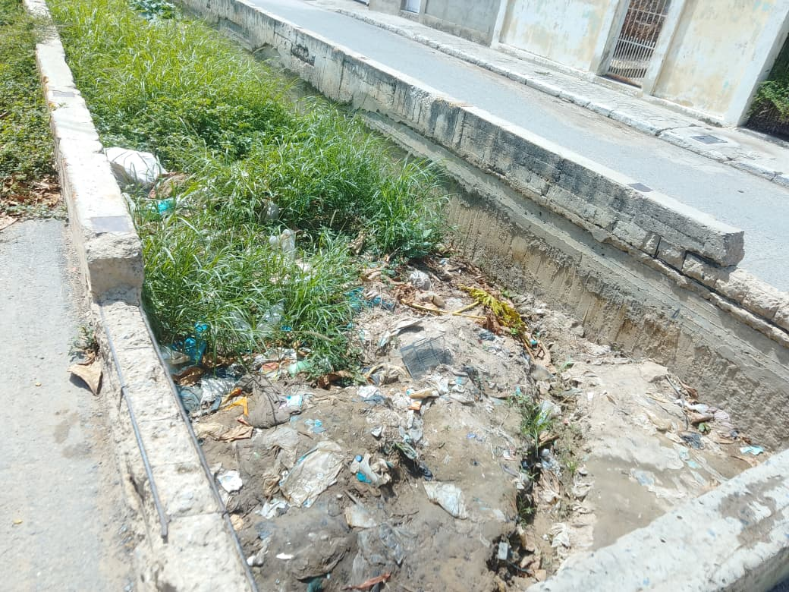
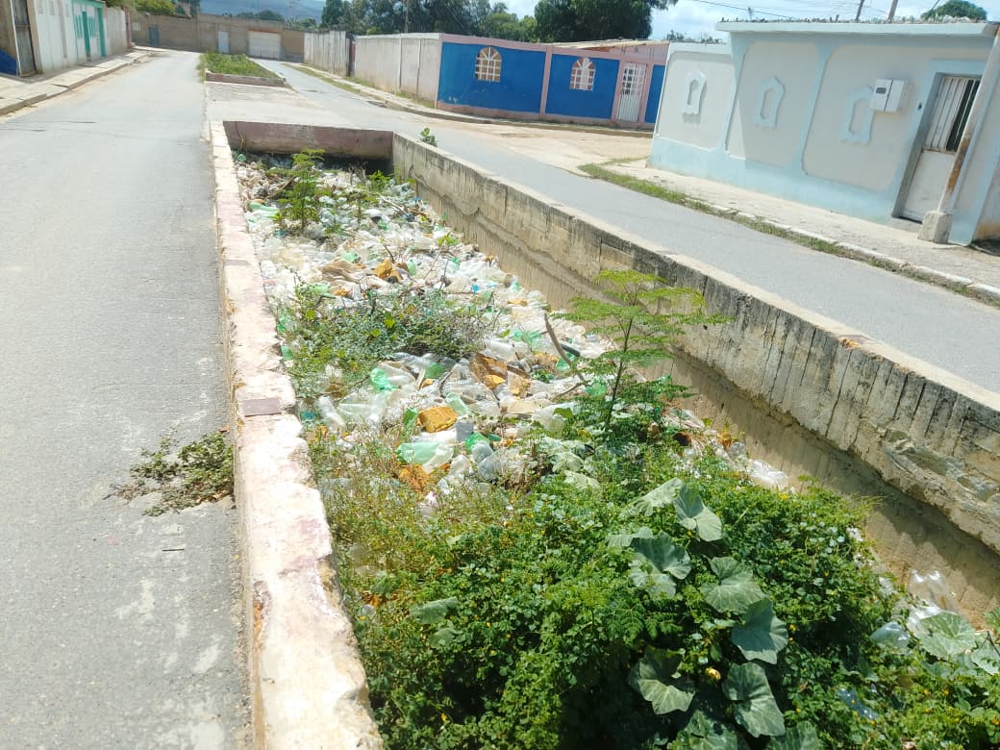
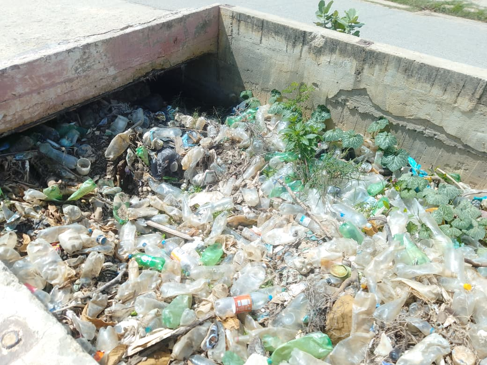
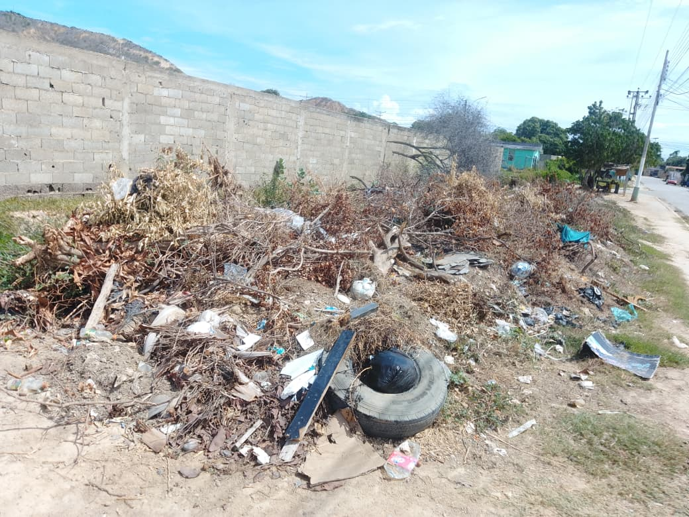
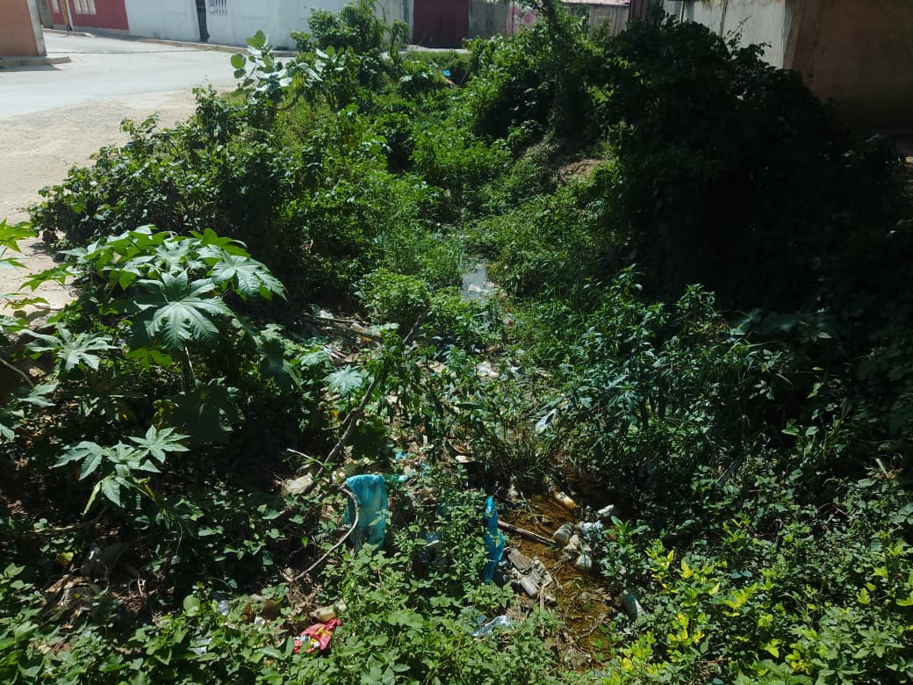
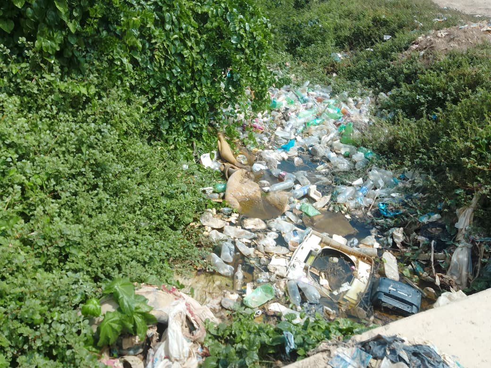

Orgánicos
Restos de comida, cáscaras y hojas secas. Almacénalos en bolsas cerradas o aprovéchalos para compostaje casero.
Preservando la biodiversidad y creando comunidades ecosostenibles.
Registro visual de los puntos clave en Urbanización Campeche.






Aprende cómo pequeñas acciones diarias protegen nuestro entorno y mejoran la calidad de vida en nuestra comunidad.
Restos de comida, cáscaras y hojas secas. Almacénalos en bolsas cerradas o aprovéchalos para compostaje casero.
Botellas plásticas, latas, cartón y vidrio. Entriégalos limpios y secos en los puntos de acopio comunitarios.
Pilas, bombillos, medicamentos vencidos y baterías. Nunca los tires al contenedor común o cañadas.
Un manejo inadecuado de la basura atrae plagas y genera criaderos de mosquitos. Sigue estas recomendaciones:
Transmitidos por el mosquito Aedes aegypti, el cual se reproduce en envases, cauchos y recipientes donde se acumula agua de lluvia o residuos estancados.
Infección bacteriana transmitida por el contacto con agua o tierra contaminada por orina de ratas, atraídas por la acumulación de basura orgánica sin tapar.
Bacterias y parásitos que proliferan en la basura expuesta, transportados por moscas hacia alimentos y agua de consumo en el hogar.
Las personas detrás de la iniciativa EcoCampeche.
Socio-Tecnológico — EcoCampeche Sector 4A.
Socio-Tecnológico — EcoCampeche Sector 4A.
Socio-Tecnológico — EcoCampeche Sector 4A.
Socio-Tecnológico — EcoCampeche Sector 4A.
Conoce los orígenes e historia del entorno que hoy protegemos y transformamos juntos a través de EcoCampeche.
El nombre Campeche proviene de las voces mayas "Can" (serpiente) y "Pech" (garrapata), vinculado históricamente al "Lugar del Señor Sol Garrapata". Hoy, su herencia resuena en la identidad de nuestra comunidad.
Los terrenos de Campeche Sector 4A fueron originalmente fundos agrícolas de tierras fértiles, dedicados al cultivo de frutas, hortalizas y a la cría de animales antes de su consolidación urbana.
Su desarrollo habitacional inició en los años 90 mediante proyectos conjuntos con INAVI y la Fundación Regional de la Vivienda, dando paso a la creación de los sectores que hoy integran la urbanización.